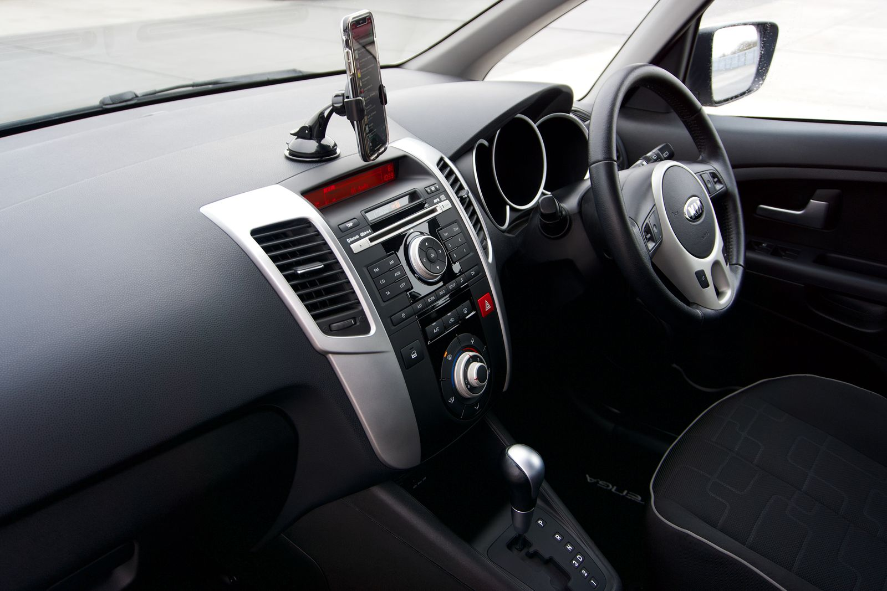

Uma nova cotação
Conte qual é o carro e como ele é usado para iniciar a consulta de seguro automotivo.
Seu carro, sua rotina e uma conversa com Matheus Fernandes. Consulte seu seguro automotivo em São Gonçalo.
Seu carro e sua rotina orientam a conversa sobre seguro automotivo.
Matheus Fernandes é consultor de seguros automotivos, com contato direto pelo WhatsApp e endereço em Colubandê, São Gonçalo.
Quer consultar um seguro ou conversar sobre uma renovação? Conte o que procura e esclareça as condições antes de decidir.
Converse com MatheusEscolha o assunto. O atendimento começa pelo seu momento, sem uma oferta igual para todo mundo.

Informe o modelo do veículo e o tipo de uso. Comece com o que já tem em mãos.
Converse com Matheus sobre as possibilidades para o seu perfil e o que você quer avaliar.
Confira coberturas, limites, franquias e condições da proposta antes da contratação.
Da rotina na cidade à próxima viagem, o uso do carro faz parte da conversa sobre seguro. Fotografias ilustrativas de banco.
Algumas respostas para começar a conversa sobre o seu seguro.
Preencha o contato abaixo ou chame Matheus no WhatsApp. Informe qual é o carro e se procura um novo seguro ou uma renovação.
O valor precisa ser consultado para o veículo, perfil e condições da proposta. Converse com Matheus para iniciar a cotação.
As coberturas disponíveis devem ser confirmadas na cotação. Peça os detalhes da proposta e confira o que está incluído, os limites e as exclusões.
Confira na proposta e nas condições do seguro quando há franquia e como ela se aplica. Leve essa dúvida ao atendimento antes de contratar.
Sim. Escolha “Uma renovação” no formulário e informe o modelo do veículo para começar a conversa com Matheus.
O endereço informado é Avenida Juvenal Figueiredo, 2945, Colubandê, São Gonçalo, RJ. Combine a visita pelo WhatsApp.
Para saber mais sobre seguro auto, consulte as orientações ao consumidor da SUSEP.
Prepare sua mensagem para Matheus. Nenhum orçamento é gerado automaticamente.
(21) 99469-0945Atendimento em Colubandê. Entre em contato para combinar sua visita.
Avenida Juvenal
Figueiredo, 2945
Colubandê, São Gonçalo – RJ
CEP 24744-560
Mensagem a qualquer hora.
O perfil comercial informa atendimento 24 horas. Combine a disponibilidade diretamente com Matheus.